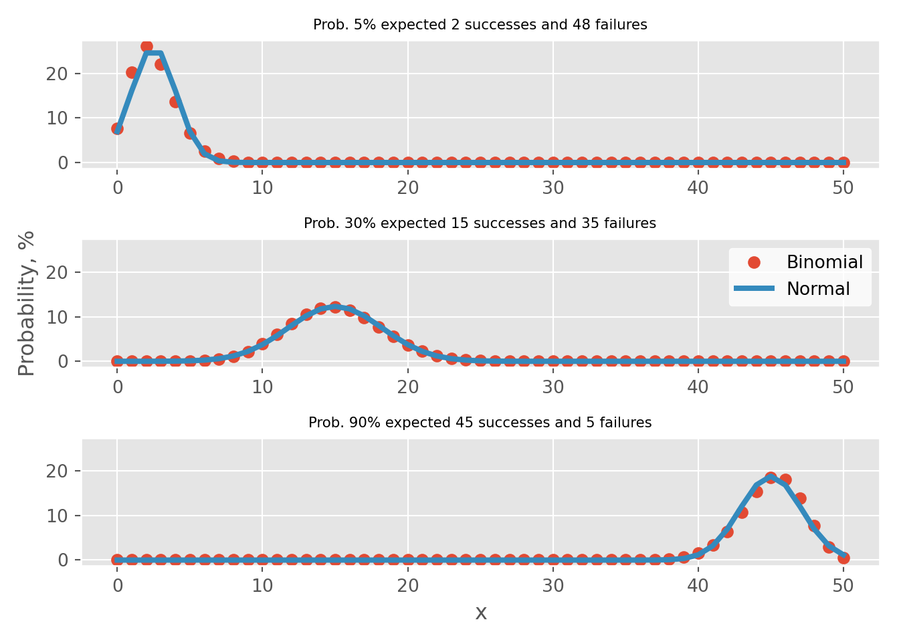

Code
# load libraries for blog post
library(ggplot2)
library(plotly)
library(data.table)
library(kableExtra)
library(RColorBrewer) # for generating color palettesThe binomial test is a statistical test used to determine whether the proportion of cases in one of only two categories is equivalent to a pre-specified proportion. Categories could include the default rate of clients within the next 12 months, patients with high or low risk of heart disease, potential customers who are likely or not likely to make a purchase, or the rate of manufacturing defects. This widely used test finds applications in diverse fields, including credit risk, medicine, and manufacturing. It is also known to as the one-sample proportion test or test of one proportion.
As with all statistical tests, the binomial test has assumptions and conditions that must be met before applying it to real-life data:
The aim of this blog post is to showcase the ramifications of failing to meet “success-failure” condition critereon. Practical examples are coded in both R and Python languages.
# load libraries for blog post
library(ggplot2)
library(plotly)
library(data.table)
library(kableExtra)
library(RColorBrewer) # for generating color palettes# load packages for blog post
import numpy as np
import pandas as pd
import matplotlib.pyplot as plt
import plotly.graph_objects as go
from scipy.stats import binom, norm
# set style
plt.style.use("ggplot")Suppose that we have a sample where outcomes are binary - e.g. only “success” and “failure”. For the given sample, we would like to estimate the true proportion and also set up a statistical test to verify whether if the proportion is equal to some value, e.g. expected.
First, we calculate a point estimate:
\[p = \frac{n_s}{n}\]
, where \(n\) - sample size and \(n_s\) - the number of successful observations (or it can be the number of failures).
\[SE = \sqrt{\frac{p \cdot (1 - p)}{n}}\] , where \(SE\) is standard error. To perform a test, one first needs to derive a Null hypothesis:
\[H_0: p = p_0\]
and an alternative hypothesis:
Finally, we needs to calculate \(Z\) statistics:
\[Z = \frac{p_0-p}{SE}\]
Obtaining the value of \(Z\) enables us to either compute confidence intervals (\(CI\)) or reject \(H_0\) in favor of \(H_A\)
To approximate any distribution as normal, it is imperative to calculate the mean (\(\mu\)) and standard deviation (\(\sigma\)). For the Binomial distribution, which consists of a number of experiments \(n\) and a probability \(p\), the mean of the normal distribution is:
\[\mu = n \cdot p\]
and the standard deviation:
\[\sigma = \sqrt{n \cdot p \cdot (1 - p)}.\]
Meeting the “Success-Failure” condition is crucial to approximate Binomial distribution as Normal. Below, I present an instance of 50 Binomial events with varying probability rates of 5%, 30%, and 90%. In tabs binomial vs normal binomial distributions are plotted against it’s normal distribution approximation.
# probabilities
p <- c(0.05, 0.3, 0.9)
# successes
x <- 0:50
# create data.table
dt <- CJ(p, x)
# add size column
dt[, size := 50]
# add binomial probability
dt[, Binomial := dbinom(x, size=size, prob=p) * 100]
# create label column
dt[, label := paste0("Prob: ", round(p*100),
"%, exp. successes ", round(p*size),
" exp. failures ", round((1-p)*size))]
# calculate mean and standard deviation
dt[, mu := size * p]
dt[, st.dev := sqrt(p * (1 - p) * size)]
# get norm distribution
dt[, Normal := dnorm(x, mean=mu, sd = st.dev) * 100]
# convert to ordered factor
dt[, label := factor(label, levels=c("Prob: 5%, exp. successes 2 exp. failures 48",
"Prob: 30%, exp. successes 15 exp. failures 35",
"Prob: 90%, exp. successes 45 exp. failures 5" ))]
# reshape for plotting
dt.plot <- melt(dt, id.vars = c("x", "label"),
measure.vars = c("Binomial", "Normal"),
variable.name = c("Type"),
value.name = c('prob'))
# create figure
fig <- ggplot(dt.plot, aes(x, prob, color=Type)) + geom_point() + facet_wrap(~label, ncol = 1) + ylab("Probability, %")
fig
# calculate error (use data.table from previous code chunk)
dt[, Error := Binomial - Normal]
# create figure
fig <- ggplot(dt, aes(x, Error)) + geom_point() + facet_wrap(~label, ncol = 1) + ylab("Error (binom. - norm.), %")
fig
# probabilities
p = [0.05, 0.3, 0.9]
# successes
x = np.arange(51)
# create DataFrame with all combinations
df_1 = pd.DataFrame({'p': p})
df_2 = pd.DataFrame({'x': x})
# create key for joining
df_1['key'] = 0
df_2['key'] = 0
# perform cross join
df = df_1.merge(df_2, on='key', how='outer')
# drop key column
del df['key']
# add size value
df['size'] = 50
# calculate binomial probability
df['Binomial'] = binom.pmf(df['x'], df['size'], df['p']) * 100
# calculate mean and standard deviation
df['mu'] = df['size'] * df['p']
df['se'] = np.sqrt(df['p'] * (1 - df['p']) / df['size'])
df['std'] = np.sqrt(df['p'] * (1 - df['p']) * df['size'])
# get norm distribution
df['Normal'] = df.apply(lambda x: norm.pdf(x['x'], x['mu'], x['std']) * 100, axis = 1)
# create figure
fig, ax = plt.subplots(3, 1, sharey=True)
# iterate over probabilities
for i, _p in enumerate(p):
# select data for plotting
dt_plot = df.loc[df['p'] == _p].copy()
# plot binomial and normal distributions
ax[i].plot(dt_plot['x'], dt_plot['Binomial'], "o", label='Binomial');
ax[i].plot(dt_plot['x'], dt_plot['Normal'], "-", label='Normal', linewidth=3);
# add sub titles
ax[i].set_title(f"Prob. {_p*100:.0f}% expected {50*_p:.0f} successes and {50*(1-_p):.0f} failures", fontsize=8);
# add labels
ax[1].set_ylabel("Probability, %");
ax[2].set_xlabel("x");
# add legend and white background
legend = ax[1].legend(frameon = 1);
frame = legend.get_frame();
frame.set_color('white');
plt.tight_layout()
plt.show()
# calculate error (use DataFrame from previous code chunk)
df['Error'] = df.Binomial - df.Normal
# create figure
fig, ax = plt.subplots(3, 1, sharey=True)
# iterate over probabilities
for i, _p in enumerate(p):
# select data for plotting
dt_plot = df.loc[df['p'] == _p]
# plot binomial and normal distributions
ax[i].plot(dt_plot['x'], dt_plot['Error'], "o", color='k', markersize=3);
# add sub titles
ax[i].set_title(f"Prob. {_p*100:.0f}% expected {50*_p:.0f} successes and {50*(1-_p):.0f} failures", fontsize=8);
# adjust limits for better readability
ax[0].set_ylim(-4.9, 4.9)
# add labels(-4.9, 4.9)ax[1].set_ylabel("Probability, %")
ax[2].set_xlabel("x")
plt.tight_layout()
plt.show()
The first thing to notice is that the “Success-Failure” criterion is only met for the p=30% case. In tabs error one can see that approximation error, i.e. the difference between probabilities calculated using Binomial and Normal distribution approximations, is above 2% for the \(p=5\%\) and \(p=90\%\) examples.
Let’s dive deeper into understanding approximation error. We have to be mindful, when comparing discrete binomial distribution with a continuous normal distribution. The binomial distribution probability spaces bounded between 0 and k events, where k number of attempts while for normal it’s mathematical y unbounded (for large Z values you can calculate very small probability values). Apart for case \(p=50\%\) binomial distribution is not symmetrical as oppose to normal distribution. In examples bellow, we will compare areas under the curve for both distributions using interactive charts by plotly library/package. First I have created a functions which visualizes both distributions using interactive charts.
PlotDistributions <- function(prob, size){
# create observation vector
if (prob < 0.5){
x <- 0:(size*prob*3)
} else {
x <- (size - 3 * size * (1 - prob)):size
}
# get probabilities for both binomial and norm distributions
y.binom <- dbinom(x, size=size, prob=prob) * 100
y.norm <- dnorm(x, mean=size * prob, sd = sqrt(prob * (1 - prob) * size)) * 100
# create data table for plotting
dt <- data.table(x = x,
prob.binom = y.binom,
prob.norm = y.norm)
# add columns with hover information
dt[, text.1 := paste0('Point estimate probability<br>to observer exactly ', x,
' events is ', round(y.binom, 3), "%")]
dt[, text.2 := paste0('Point estimate probability<br>to observer exactly ', x,
' events is ', round(y.norm, 3), "%")]
dt[, text.3 := paste0('Point estimate error<br>to observer exactly ', x,
' events is ', round(y.binom - y.norm, 3), "%")]
# create figure
fig <- plot_ly(data = dt, type = 'scatter', mode = 'lines')
# add traces
fig <- fig %>% add_trace(x = ~x, y = ~prob.norm, text = ~text.1,
name = 'Normal',mode = 'lines',
hoverinfo = 'text',
line = list(color = "#FF6666", width = 5))
fig <- fig %>% add_trace(x = ~x, y = ~prob.binom, text = ~text.2,
name = 'Binomial',mode = 'markers',
hoverinfo = 'text',
marker = list(color = "#3399FF", size = 12))
fig <- fig %>% add_trace(x = ~x, y = ~(prob.binom-prob.norm), text = ~text.3,
name = 'Error',mode = 'lines+markers',
hoverinfo = 'text',
line = list(color = "black", width = 5),
marker = list(color = "black", size = 12),
visible = "legendonly")
# update layout
fig <- fig %>% layout(title = paste0("p = ", round(prob*100), "%, ", size, " trials"),
xaxis = list(title = "Observations"),
yaxis = list (title = "Probability, %"),
hovermode = "x unified",
legend=list(title=list(text='<b> Distributions </b>')))
# return figure
return(fig)
}# create function for plotting distributions
def plot_distributions(prob, size):
# create observation vector
x = np.arange(int(size*prob*3))
# get probabilities for both binomial and norm distributions
y_binom = binom.pmf(x, n=size, p=prob) * 100
# calculate variance and sigma
variance = size * prob * (1 - prob)
sigma = np.sqrt(variance)
y_norm = norm.pdf(x, loc = size * prob, scale = sigma) * 100
# generate Data.Frame
df = pd.DataFrame({'x': x, 'binom': y_binom, 'norm': y_norm})
# calculate error
df['error'] = df.binom - df.norm
error = df.binom - df.norm
# generate hover messages
df['text_1'] = df.apply(lambda x: f'Point estimate probability<br>to observer exactly {x["x"]:.0f} events is {x["binom"]:.3f}%', axis = 1)
df['text_2'] = df.apply(lambda x: f'Point estimate probability<br>to observer exactly {x["x"]:.0f} events is {x["norm"]:.3f}%', axis = 1)
df['text_3'] = df.apply(lambda x: f'Point estimate error<br>to observer exactly {x["x"]:.0f} events is {x["error"]:.3f}%', axis = 1)
# create figure
fig = go.Figure()
fig.add_trace(go.Scatter(x=x, y=y_norm, text = df['text_1'].values,
mode='lines', name='Normal', hoverinfo = 'text',
line=dict(color='#FF6666', width=5)))
fig.add_trace(go.Scatter(x=x, y=y_binom, text = df['text_2'].values,
mode='markers', name='Binomial', hoverinfo = 'text',
marker=dict(color='#3399FF', size=12)))
fig.add_trace(go.Scatter(x=x, y=error, text = df['text_3'].values,
mode='markers', name='Error', hoverinfo = 'text',
marker=dict(color='black', size=12),
visible = "legendonly"))
# Edit the layout
fig.update_layout(title=f"p = {prob*100:.1f}%, {size} trials",
xaxis_title='Observations',
yaxis_title='Probability, %',
template="ggplot2",
hovermode="x unified")
return figNext I provide examples using small probabilities (99%, 95%, 0.5% and 0.1%) where “Success-failure” condition is not met, i.e. either 5 failures or 5 successes are expected for all 4 examples.
# return figure
PlotDistributions(0.999, 5000)# return figure
PlotDistributions(0.995, 1000)# use python helper function from above
fig = plot_distributions(0.005, 1000)
fig# use python helper function from above
fig = plot_distributions(0.001, 5000)
figLet’s taken hypothetical model with small probability, i.e. we expect to have 1% manufacturing defects or 1% of clients in our portfolio will fail to meet their credit obligations. For this hypothetical model to meet “Success-Failure” condition we would need to collect at least 1000 observations, i.e. to manufacture 1000 devices or issue credit to 1000 obligatory. In the tab 1% (R) that if this condition is not met, i.e. we collected 500 events and expect 5 failures/defaults. From both visual inspection and reviewing error estimates for different outcomes (select error on legend to view error values) it’s clear that normal distribution approximation overestimates probability for \(\ge5\) and underestimates \(\le5\). For all 4 examples, expected number of “Successes-failures” is 5. One can observed that the smaller the probability is the larger the error becomes.
Let’s compare 3 probabilities calculated using binomial and normal distribution approximation:
We can calculate these probabilities using both binomial and normal distributions and then compare them, e.g. \(ratio_1 = \frac{p_1 (binom.)}{p_1 (norm.)}\). \(p_1\) probabilities and all 3 ratios are calculated for all 4 examples above and few more examples. For all cases we have 5 expected successes or failures. Results are presented in table bellow.
# generate data.table
dt <- data.table(p = c(0.999, 0.995, 0.99, 0.95, 0.8,
0.5,
0.2, 0.05, 0.01, 0.005, 0.001),
N = c(5000, 1000, 500, 100, 25,
10,
25, 100, 500, 1000, 5000))
# expected events
dt[, x := p * N]
# get binomial, normal probabilities and their ratio
dt[, binom.p1 := dbinom(x, size=N, prob=p) * 100]
dt[, norm.p1 := dnorm(x, mean=N * p, sd = sqrt(p * (1 - p) * N)) * 100]
dt[, ratio.1 := binom.p1/norm.p1 * 100]
# calculate p2 probabilities
dt[, binom.p2 := pbinom(x-1, size=N, prob=p) * 100]
dt[, norm.p2 := (1-dnorm(x, mean=N * p, sd = sqrt(p * (1 - p) * N)))/2 * 100]
# calculate p3 probabilities
dt[, binom.p3 := (1 - pbinom(x, size=N, prob=p)) * 100]
# calculate ratios
dt[, ratio.2 := binom.p2/norm.p2 * 100]
dt[, ratio.3 := binom.p3/norm.p2 * 100]
# round columns for better readability
cols <- names(dt)[4:11]
dt[,(cols) := round(.SD, 3), .SDcols=cols]
# convert probability to percents
dt[, p := round(p * 100, 1)]
# remove column
dt$x <- NULL
# generate table with first few rows and columns
knitr::kable(dt[, c(1:5, 9, 10)], col.names = c("p, %", "N", "p_1 (binom.), %", "p_1 (norm.), %", "ratio_1", "ratio_2", "ratio_3")) %>%
kable_styling(bootstrap_options = c("striped", "hover", "condensed"))| p, % | N | p_1 (binom.), % | p_1 (norm.), % | ratio_1 | ratio_2 | ratio_3 |
|---|---|---|---|---|---|---|
| 99.9 | 5000 | 17.556 | 17.850 | 98.349 | 93.497 | 107.220 |
| 99.5 | 1000 | 17.591 | 17.886 | 98.349 | 93.538 | 107.181 |
| 99.0 | 500 | 17.635 | 17.931 | 98.349 | 93.589 | 107.132 |
| 95.0 | 100 | 18.002 | 18.305 | 98.345 | 94.008 | 106.734 |
| 80.0 | 25 | 19.602 | 19.947 | 98.267 | 95.764 | 105.099 |
| 50.0 | 10 | 24.609 | 25.231 | 97.535 | 100.832 | 100.832 |
| 20.0 | 25 | 19.602 | 19.947 | 98.267 | 105.099 | 95.764 |
| 5.0 | 100 | 18.002 | 18.305 | 98.345 | 106.734 | 94.008 |
| 1.0 | 500 | 17.635 | 17.931 | 98.349 | 107.132 | 93.589 |
| 0.5 | 1000 | 17.591 | 17.886 | 98.349 | 107.181 | 93.538 |
| 0.1 | 5000 | 17.556 | 17.850 | 98.349 | 107.220 | 93.497 |
There results show that when \(p > 50\%\) overestimation is observed on the right side of distribution nd opposite is true for \(p < 50\%\). The ratio between \(p_1\) probabilities is the same across all 3 examples. This is due to the fact that all 3 cases have 5 expected success/failures. Overestimation \(ratio_2\) are the same for \(p > 50\%\) cases as underestimation \(ratio_3\). As implied probability becomes closer to 50% the binomial distribution becomes more symmetrical which can be supported by seeing that \(ratio_2\) and \(ratio_3\) are close to 100% for given example.
Finally let’s compare cumulative probabilities for different examples of probabilities \(p\) and expected values (EV). I have added 95% (black dashed line) and 99% (red dashed line) confidence intervals to show when one can start rejecting null hypothesis using commonly used cut-off levels.
# helper function for plotting
vline <- function(x = 0, color = "black") {
list(
type = "line",
y0 = 0,
y1 = 1,
yref = "paper",
x0 = x,
x1 = x,
line = list(color = color, dash = "dot")
)
}
# helper function to draw cum. probabilities
PlotCumProbs <- function(p, N){
# for adjusting plot x limits
x.ratio <- p*N
# create vector depending on probability
if (p <= 0.5){
x <- 0:max((N*p*3), N*p)
} else {
x <- max((N - 3 * N * (1 - p)), 0):N
}
# calculate z values as events for different confidence intervals
Z.95.left <- (N * p - 1.960 * sqrt(p * (1 - p) * N))
Z.99.left <- (N * p - 2.576 * sqrt(p * (1 - p) * N))
Z.95.right <- (N * p + 1.960 * sqrt(p * (1 - p) * N))
Z.99.right <- (N * p + 2.576 * sqrt(p * (1 - p) * N))
# calculate cum. probabilities for both binomial and normal distributions
y.binom <- pbinom(x, size=N, prob=p) * 100
y.norm <- pnorm(x, mean=N * p, sd = sqrt(p * (1 - p) * N)) * 100
# create data.table for plotting
dt <- data.table(x = x, y.binom = y.binom, y.norm = y.norm)
# calculate error
dt[, error := y.binom - y.norm]
# add hover text messages
dt[, text.1 := paste0(round(y.binom, 3), "%")]
dt[, text.2 := paste0(round(y.norm, 3), "%")]
dt[, text.3 := paste0(round(error, 3), "%")]
# create figure
fig <- plot_ly(data = dt, type = 'scatter', mode = 'lines')
# add traces
fig <- fig %>% add_trace(x = ~x, y = ~y.norm, text = ~text.1,
name = 'Normal',mode = 'lines',
hoverinfo = 'text',
line = list(color = "#FF6666", width = 5))
fig <- fig %>% add_trace(x = ~x, y = ~y.binom, text = ~text.2,
name = 'Binomial',mode = 'markers',
hoverinfo = 'text',
marker = list(color = "#3399FF", size = 12))
fig <- fig %>% add_trace(x = ~x, y = ~error, text = ~text.3,
name = 'Error',mode = 'lines+markers',
hoverinfo = 'text',
line = list(color = "black", width = 5),
marker = list(color = "black", size = 12))
# update layout
fig <- fig %>% layout(title = paste0("p = ", round(p*100, 1), "%, ", N, " trials"),
xaxis = list(title = "Observations"),
yaxis = list (title = "Probability, %"),
hovermode = "x unified",
shapes = list(vline(Z.99.left, color='red'), vline(Z.95.left), vline(Z.95.right), vline(Z.99.right, color='red')),
legend=list(title=list(text='<b> Distributions </b>')))
# return figure object
return(fig)
}
# plot example for 0.1%
PlotCumProbs(0.001, 5000)# plot example for 1%
PlotCumProbs(0.01, 500)# plot example for 10%
PlotCumProbs(0.1, 100)# plot example for 20%
PlotCumProbs(0.2, 75)# plot example for 50%
PlotCumProbs(0.5, 10)# plot example for 50%
PlotCumProbs(0.5, 20)# plot example for 50%
PlotCumProbs(0.5, 30)# plot example for 80%
PlotCumProbs(0.8, 75)# plot example for 90%
PlotCumProbs(0.9, 100)# plot example for 99%
PlotCumProbs(0.99, 500)# plot example for 99.9%
PlotCumProbs(0.999, 5000)The first thing to notice, that 2-sided hypothesis can’t be really tested for low EV example, see tabs with (5 EV) in their name - the red dashed lines are outside of viable outcome range with an exception of 50% (5EV). For this example, after 10 attempts rejecting Null hypothesis \(H_0 \ne p\) with 99% CI is possible by observing 0 or 10 successes. AS sample size increases, i.e. larger EV, distribution widths are reduced, which means that 2-sided tests with 99% CI become viable, see example with (EV 15). Again, when comparing distributions with same EV but different probabilities, we see that error between binomial distribution and it’s approximation using normal distribution is very similar.
Finally let’s investigate for different probabilities how much \(p_1\) and \(ratio_1\) are affected as sample size is increased.
Now let’s investigate how these probabilities and errors change as sample size is increased and “success-failure” condition is met.
# generate data.table with expected values and sample probabilities
probs <- c(0.001, 0.01, 0.1, 0.2, 0.4, 0.5, 0.6, 0.8, 0.9, 0.99, 0.999)
dt <- CJ(Sucesses = c(1:16), p = probs)
# get probability and sample size for expected values
dt[p <= 0.5, N := Sucesses / p]
dt[p > 0.5, N := Sucesses / (1 - p)]
# get number of failures
dt[, Failures := N - Sucesses]
# calculate probabilities to observe expected number of observations
dt[p <= 0.5, binom.p1 := dbinom(Sucesses, size=N, prob=p) * 100]Warning in dbinom(Sucesses, size = N, prob = p): NaNs produceddt[p > 0.5, binom.p1 := dbinom(Failures, size=N, prob=p) * 100]Warning in dbinom(Failures, size = N, prob = p): NaNs produceddt[p <= 0.5, norm.p1 := dnorm(Sucesses, mean=N * p, sd = sqrt(p * (1 - p) * N)) * 100]
dt[p > 0.5, norm.p1 := dnorm(Failures, mean=N * p, sd = sqrt(p * (1 - p) * N)) * 100]
# calculate p2 probabilities
dt[p <= 0.5, binom.p2 := pbinom(Sucesses, size=N, prob=p) * 100]Warning in pbinom(Sucesses, size = N, prob = p): non-integer n = 2.500000Warning in pbinom(Sucesses, size = N, prob = p): non-integer n = 7.500000Warning in pbinom(Sucesses, size = N, prob = p): non-integer n = 12.500000Warning in pbinom(Sucesses, size = N, prob = p): non-integer n = 17.500000Warning in pbinom(Sucesses, size = N, prob = p): non-integer n = 22.500000Warning in pbinom(Sucesses, size = N, prob = p): non-integer n = 27.500000Warning in pbinom(Sucesses, size = N, prob = p): non-integer n = 32.500000Warning in pbinom(Sucesses, size = N, prob = p): non-integer n = 37.500000Warning in pbinom(Sucesses, size = N, prob = p): NaNs produceddt[p <= 0.5, norm.p2 := (1-dnorm(Sucesses, mean=N * p, sd = sqrt(p * (1 - p) * N)))/2 * 100]
dt[p > 0.5, binom.p2 := pbinom(Failures, size=N, prob=p) * 100]Warning in pbinom(Failures, size = N, prob = p): non-integer n = 2.500000Warning in pbinom(Failures, size = N, prob = p): non-integer n = 7.500000Warning in pbinom(Failures, size = N, prob = p): non-integer n = 12.500000Warning in pbinom(Failures, size = N, prob = p): non-integer n = 17.500000Warning in pbinom(Failures, size = N, prob = p): non-integer n = 22.500000Warning in pbinom(Failures, size = N, prob = p): non-integer n = 27.500000Warning in pbinom(Failures, size = N, prob = p): non-integer n = 32.500000Warning in pbinom(Failures, size = N, prob = p): non-integer n = 37.500000Warning in pbinom(Failures, size = N, prob = p): NaNs produceddt[p > 0.5, norm.p2 := (1-dnorm(Failures, mean=N * p, sd = sqrt(p * (1 - p) * N)))/2 * 100]
# calculate p3 probabilities
dt[p <= 0.5, binom.p3 := (1 - pbinom(Sucesses, size=N, prob=p)) * 100]Warning in pbinom(Sucesses, size = N, prob = p): non-integer n = 2.500000Warning in pbinom(Sucesses, size = N, prob = p): non-integer n = 7.500000Warning in pbinom(Sucesses, size = N, prob = p): non-integer n = 12.500000Warning in pbinom(Sucesses, size = N, prob = p): non-integer n = 17.500000Warning in pbinom(Sucesses, size = N, prob = p): non-integer n = 22.500000Warning in pbinom(Sucesses, size = N, prob = p): non-integer n = 27.500000Warning in pbinom(Sucesses, size = N, prob = p): non-integer n = 32.500000Warning in pbinom(Sucesses, size = N, prob = p): non-integer n = 37.500000Warning in pbinom(Sucesses, size = N, prob = p): NaNs produced# get ratios between estimates
dt[, ratio.1 := round(binom.p1/norm.p1 * 100, 3)]
dt[, ratio.2 := round(binom.p2/norm.p2 * 100, 3)]
dt[, ratio.3 := round(binom.p3/norm.p2 * 100, 3)]
# for coloring get probability
dt[, Probability := paste0(round(p * 100, 1), "%")]
# generate figure
fig <- plot_ly(dt,
x = ~Sucesses,
y = ~ratio.1,
color = ~Probability,
colors = brewer.pal(length(probs), "BrBG"),
line = list(width = 4))
fig <- fig %>% add_lines()
# with log scales
fig <- layout(fig,
hovermode = "x unified",
yaxis = list(type = "log", title = "Ratio 1, %"),
xaxis = list(title = "Expected sucessess/failures"),
legend=list(title=list(text='<b> Probabilities </b>')))
fig# generate figure
fig <- plot_ly(dt,
x = ~Sucesses,
y = ~ratio.2,
color = ~Probability,
colors = brewer.pal(length(probs), "BrBG"),
line = list(width = 4))
fig <- fig %>% add_lines()
# with log scales
fig <- layout(fig,
hovermode = "x unified",
yaxis = list(type = "log", title = "Ratio 2, %"),
xaxis = list(title = "Expected sucessess/failures"),
legend=list(title=list(text='<b> Probabilities </b>')))
fig# generate figure
fig <- plot_ly(dt,
x = ~Sucesses,
y = ~ratio.3,
color = ~Probability,
colors = brewer.pal(length(probs), "BrBG"),
line = list(width = 4))
fig <- fig %>% add_lines()
# with log scales
fig <- layout(fig,
hovermode = "x unified",
yaxis = list(type = "log", title = "Ratio 3, %"),
xaxis = list(title = "Expected sucessess/failures"),
legend=list(title=list(text='<b> Probabilities </b>')))
figThe accuracy of approximating binomial distribution with binomial mostly depends on sample size, i.e. expected number of successes/failures.
One should be very mindful when designing experiments for one-sample binomial test. Failing to meet “success-failure” condition would result in overestimation or underestimation of you \(H_0\) hypothesis results.
Content for this blog post was prepared using following references: